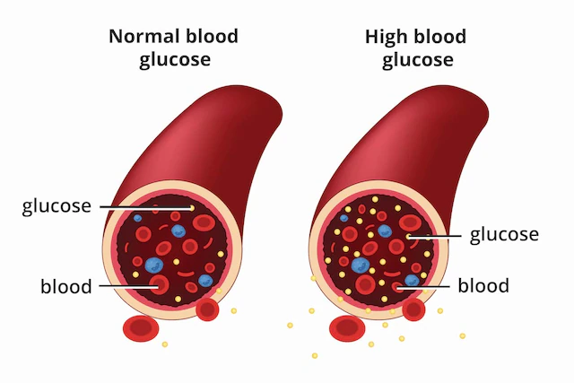

What is Diabetes Mellitus?
Diabetes mellitus is a chronic disorder of carbohydrate, protein and fat metabolism characterized by hyperglycaemia due to lack of insulin and or insensitivity.
Hyperglycaemia is a common endpoint for all types of diabetes mellitus and it is a parameter that is measured to evaluate and manage the efficacy of diabetes therapy. The central disturbance in diabetes mellitus is an abnormality in insulin production or action or both, although other factors can be involved.
Diabetes is a multiple physiological disease, it has been defined as a state of premature cardiovascular death that is associated with chronic hyperglycaemia and also associated with blindness and renal failure (Fisher and Shaw, 2001). Diabetes also predispose to arterial diseases. It is often accompanied by hypertension, lipid disorder and obesity many cases of diabetes and almost all its unwanted long-term consequences are potentially avoidable but it will require intervention at a societal as well as medical level.
Diabetes is a serious disease associated with high risk of life-threatening complications such as heart attack, stroke and kidney diseases, in fact the risk of death among diabetic people with these catastrophic complications is about four times that of people without diabetes. According to (Friderichsen and Maunsbatch 1997). The criteria for diagnosis of diabetes mellitus have been explained and include a causal plasma glucose of 11.2 mmol/l or higher or fasting plasma glucose of 7.0 mmol/l or higher.
The major goal in the treatment of diabetes has been to keep both short term and long-term glucose levels within acceptable limits. Thereby reducing the risk of long-term complication (Park et al., 2009).
Classification of Diabetes Mellitus
Type 1 Insulin dependent diabetes mellitus
There is auto-immune destruction of beta cells in pancreatic islets, absolute lack of insulin. The levels of insulin are very low initially and become absent as the disease progress and the patients are more prone to ketoacidosis.
Type 2 Non-Insulin dependent diabetes mellitus
There is loss or moderate reduction in beta cell mass. Insulin circulation is low, normal or even high. No antibody is demonstrable. Has a high degree of genetic predisposition. Has a late onset (past middle age), over 90% cases of diabetes are type 2 diabetes (Tripathi, 2013).
Gestational diabetes
Gestational diabetes develops in 2 to 5 percent of all pregnancies but usually disappears when the pregnancy is over. It occurs more frequently in African Americans, Latinos, American Indians and people with family history of diabetes than other groups. Obesity is also associated with higher risk.

Signs and Symptoms
The classical symptoms of type 1 diabetes include: polyuria (frequent urination), polydipsia (increased thirst), polyphagia (increased hunger), and weight loss.
Signs and symptoms of type 2 diabetes are; early symptoms which may be nothing more than chronic fatigue, generalised weakness and malaise (feeling of unease), excessive urine production, excessive thirst and increased fluid intake, blurred vision (typically from lens shape alterations, due to osmotic effects, e.g., high blood glucose levels), unexplained weight loss, lethargy, itching of external genitalia, excessive bowel movements.
Complications
Macrovascular complications include coronary artery disease e.g myocardial infarction, cerebral vascular disease e.g stroke, symptoms of cerebrovascular diseases (Smeltzer and Bare 1996).
Microvascular complications include diabetic retinopathy, nephropathy, neuropathy, sexual dysfunction.